În stînga este slide-ul din curs, în dreapta aceeași figură, calculată în browser din aceleași date. Butonul ▶ modifică parametrul pas cu pas.
Riscul sistemic: de la o bancă la sistem · Expunerea: MES și SRISK · Contribuția: CoVaR · Conectivitatea: rețele de spillover · Rețele în coadă: Financial Risk Meter · Testarea la stres și riscul climatic · Studiu de caz: conectivitatea cuantilă
Riscul sistemic: de la o bancă la sistem
Trei sisteme bancare, 2010–2026
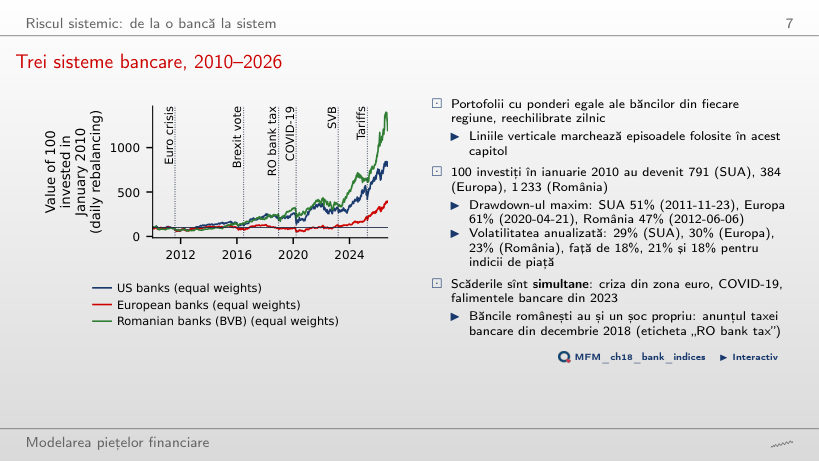
Răspuns
Portofoliul european: 61%, cu minimul la 2020-04-21. Portofoliul american a pierdut 51% pînă la 2011-11-23, iar cel românesc 47% pînă la 2012-06-06. Volatilitatea anualizată a portofoliilor bancare este 29%, 30% și 23%, față de 18%, 21% și 18% pentru S&P 500, Euro Stoxx 50 și BET.
Expunerea: MES și SRISK
MES 5% pentru treisprezece bănci
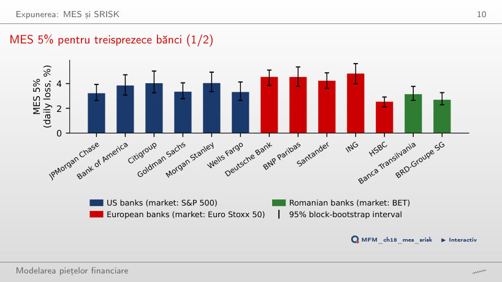
Răspuns
Da. În acele zile indicele pierde în medie 2,72%, iar băncile americane între 3,22% (JPMorgan) și 4,04% (Morgan Stanley). În Europa, HSBC este excepția: 2,54%, față de 3,16% pentru Euro Stoxx 50.
SRISK în funcție de leverage
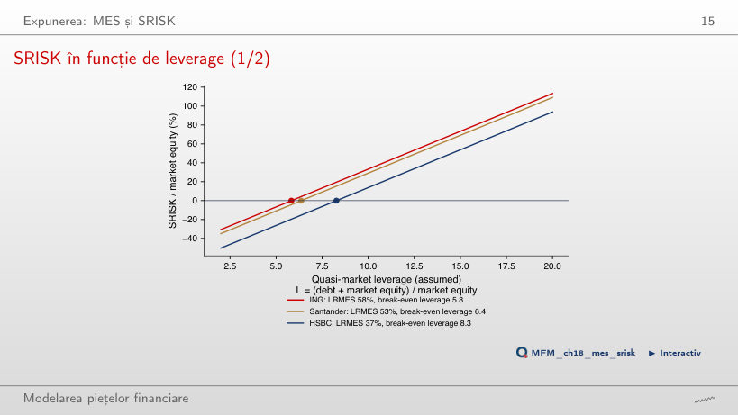
Răspuns
De la Λ* = 5,8 cu k = 8% și de la 8,2 cu k = 5,5%. Pentru HSBC, banca cu cel mai mic LRMES (37%), pragurile sînt 8,3 și 11,9. Un raport prudențial mai mic ridică pragul fiecărei bănci.
Contribuția: CoVaR
Regresia cuantilă: JPMorgan și celelalte bănci americane
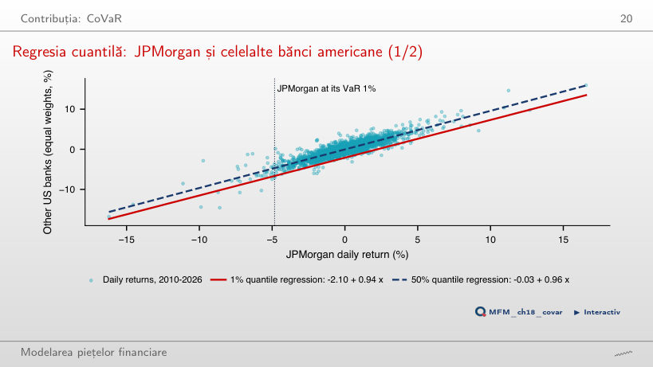
Răspuns
CoVaR 1% este 6,64% cu JPMorgan la VaR 1% (4,83%), față de 2,03% cu JPMorgan la mediană. Diferența, ΔCoVaR 1% = 4,62%, este panta 0,94 înmulțită cu distanța dintre cele două cuantile ale lui JPMorgan.
ΔCoVaR 1% pentru unsprezece bănci
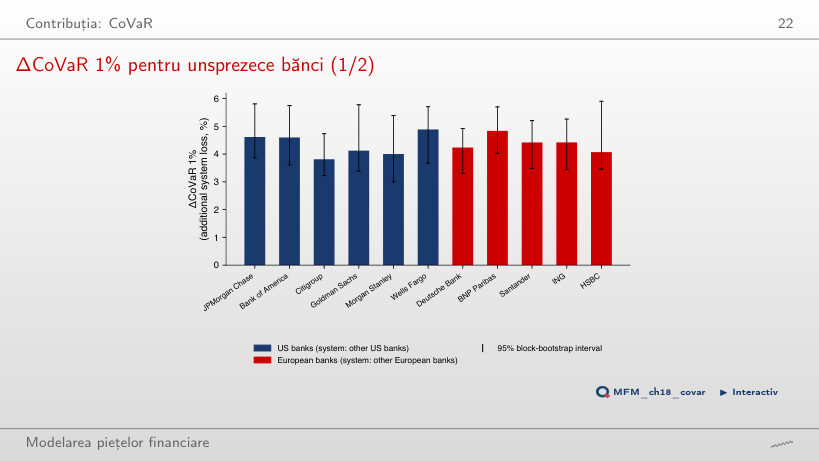
Răspuns
Estimările sînt 4,89% și 3,81%, dar niciuna dintre cele 25 de perechi din aceeași regiune nu diferă după corecția Holm. Suprapunerea intervalelor [3,23; 4,74] și [3,68; 5,71] nu este însă testul. Testul Wald comun respinge egalitatea contribuțiilor băncilor americane (p = 0,015). La α = 5% clasamentul se schimbă: corelația Spearman cu clasamentul de 1% este 0,10.
VaR și ΔCoVaR măsoară lucruri diferite
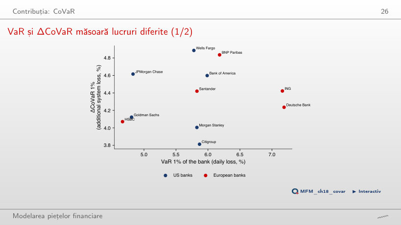
Răspuns
Nu. Deutsche Bank și ING au cele mai mari VaR (7,19% și 7,16%) și doar un ΔCoVaR mediu; JPMorgan are unul dintre cele mai mici VaR (4,83%) și unul dintre cele mai mari ΔCoVaR. Corelația Spearman este 0,16.
Contribuție față de expunere
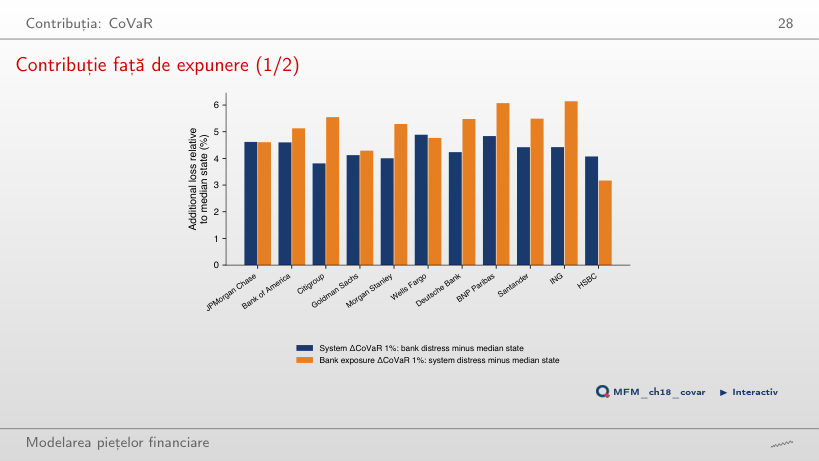
Răspuns
Nu. Contribuția ING este 4,42%, iar expunerea 6,14%. HSBC este cazul opus: contribuția 4,07%, expunerea 3,17%. Expunerea depășește contribuția la patru dintre cele cinci bănci europene.
Conectivitatea: rețele de spillover
Tabelul conectivității pentru treisprezece bănci
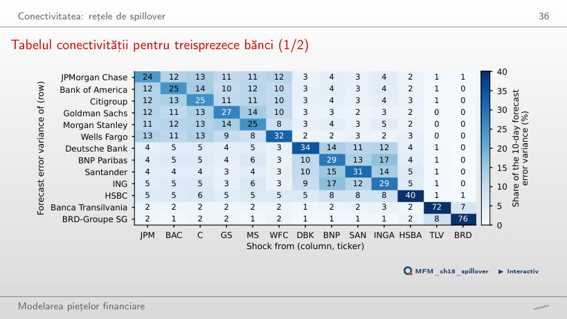
Răspuns
84,0% vine de la băncile americane, inclusiv șocurile proprii, și 15,0% de la băncile europene. O bancă europeană primește 72,7% din Europa și 26,2% din SUA. Conectivitatea totală este 63,9%.
Rețeaua de spillover net
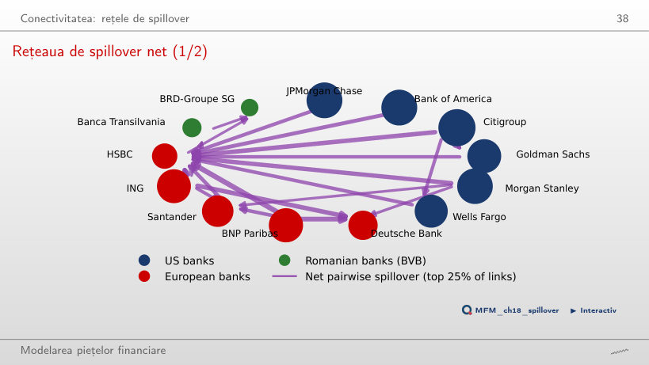
Răspuns
Transmițători: Citigroup (+19,0), Bank of America (+10,9), Morgan Stanley (+9,9) și JPMorgan (+9,8). Receptori: HSBC (−23,6), BRD (−13,0), Deutsche Bank (−12,6) și Banca Transilvania (−12,2). Săgețile arată cele mai mari 25% dintre spillover-urile nete pe perechi, cele de peste 1,57 puncte.
Conectivitatea în timp
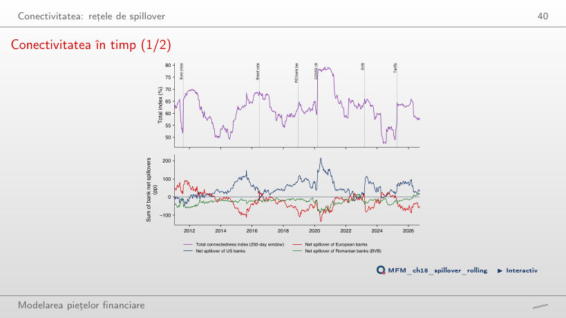
Răspuns
Crește de la 61,8% în medie în 2019 la 78,4% în primăvara lui 2020; maximul este 79,3%, la 2020-08-27. Scade după aproximativ 250 de zile, în parte pentru că criza iese din fereastră; cu o fereastră de 100 de zile, maximul este 85,6% la 2020-03-12, iar indicele scade cu 10 puncte pînă la 2020-08-13.
Rețele în coadă: Financial Risk Meter
Financial Risk Meter pentru treisprezece bănci
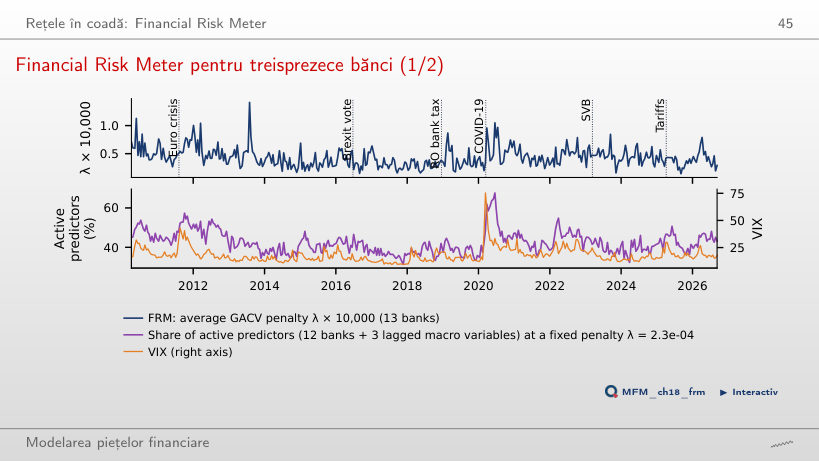
Răspuns
Slab: corelația pe cele 390 de ferestre este 0,35. Proporția predictorilor activi la λ = 2,3 × 10⁻⁴ fix urmează mai îndeaproape VIX (0,62); ea variază de la 31% (2017-11-21) la 68% (2020-06-17).
Testarea la stres și riscul climatic
Șapte scenarii istorice de stres
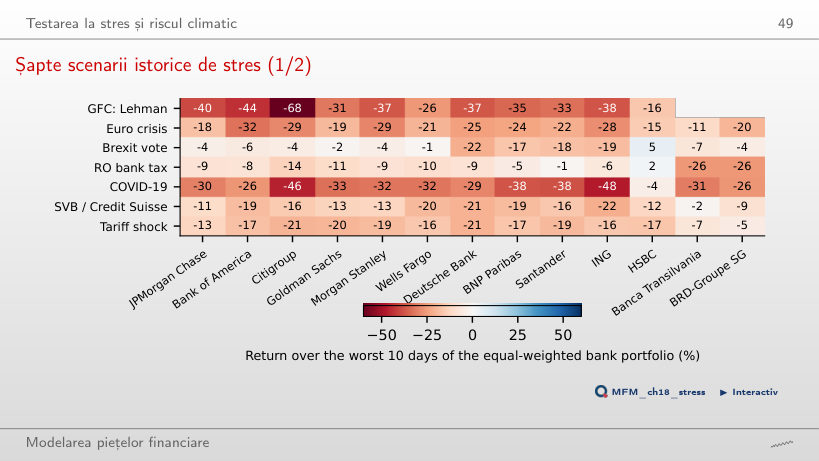
Răspuns
Băncile românești: Banca Transilvania −26% și BRD −26% în cele mai rele 10 zile ale portofoliului bancar, în timp ce băncile americane au pierdut între 8% și 14%. Pentru portofoliul bancar, cel mai rău episod rămîne Lehman (pierdere de 37,6%), urmat de COVID-19 (31,9%).
Studiu de caz: conectivitatea cuantilă
Spillover-ul pe cuantile
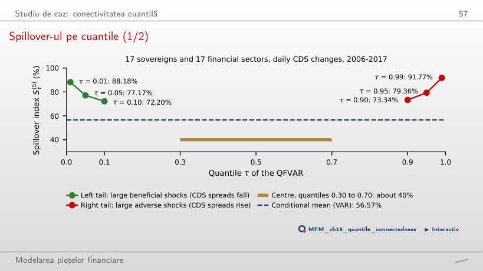
Răspuns
Nu. Indicele este 77,17% la τ = 0,05 și 79,36% la τ = 0,95, respectiv 88,18% și 91,77% la τ = 0,01 și 0,99, iar în centru este de circa 40%. Pe întregul eșantion cozile sînt aproape simetrice: RTD = 2,19 puncte.
Prețuri zilnice EODHD, ianuarie 2010 – 18 septembrie 2026: șase bănci americane, cinci bănci europene, două bănci românești (BVB), indicii S&P 500, Euro Stoxx 50, BET și VIX. Scenariile istorice pentru băncile internaționale încep în 2007. Studiul de caz: valorile raportate de Ando, Greenwood-Nimmo și Shin (2022).